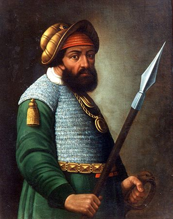
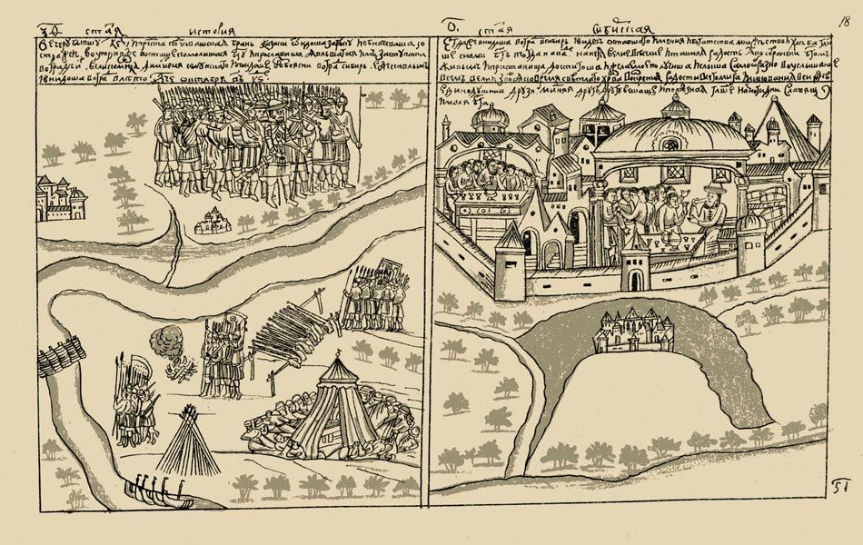
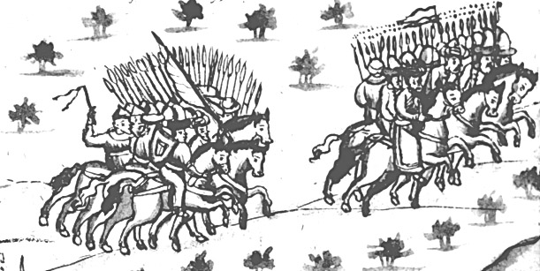
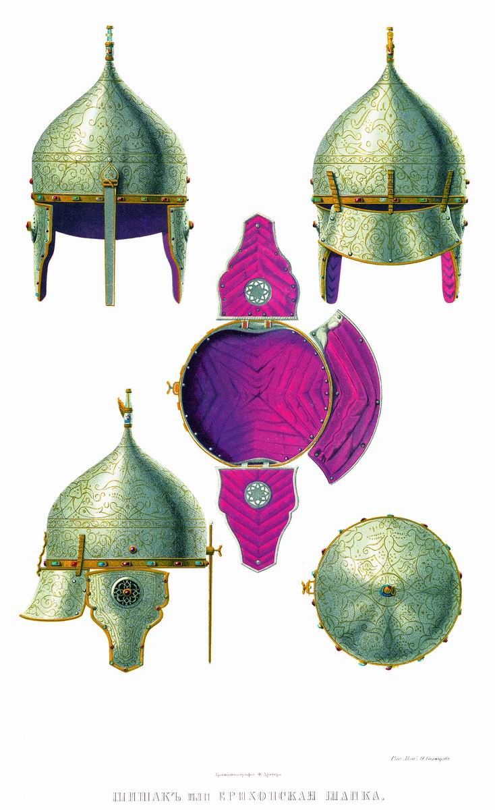
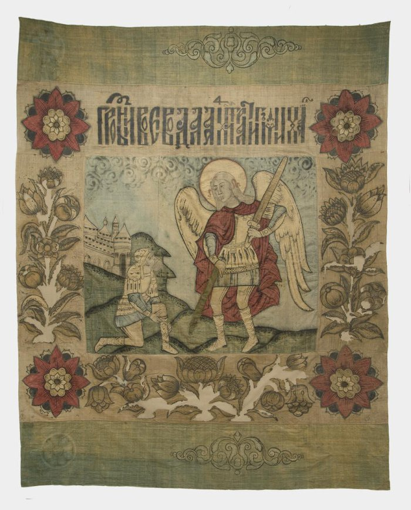

Шесть решений, которые принимал Ермак: снаряжение, перевал, зимовка, бой, посольство и последняя ночь на Иртыше. Каждый исход описан по источникам — выдуманных нет.
2 / История
Атаман без биографии
Об Ермаке Тимофеевиче не известно почти ничего твёрдого: ни рода, ни года рождения, ни того, было ли «Ермак» именем или прозвищем. В документах он появляется уже атаманом — и почти сразу как человек, которому поручено большое дело.

Парсуна Ермака. Неизвестный русский художник, конец XVII века — через сто лет после гибели атамана. Прижизненных изображений Ермака не существует: облик известен только по описанию Семёна Ремезова. Общественное достояние.
Дело снарядили Строгановы, пермские и солевычегодские вотчинники: их земли страдали от набегов ханских людей, а царская грамота 1574 года разрешала им строить крепости за Уралом и воевать с сибирским ханом. Под рукой у них оказался отряд, который умел воевать и не имел, где осесть.
Казачья дружина насчитывала 540 человек. С ними шли ещё около трёхсот литвинов и немцев — военнопленных, служивших у Строгановых. Отряд выступил в конце августа — начале сентября (по одним данным 1581 года, по другим — 1582-го), поднялся по Чусовой и Серебрянке, перетащил струги волоком через Камень и спустился по Баранче и Тагилу к Туре.
Весной 1582 года отряд вышел на Тобол. 23 октября (2 ноября) у Чувашева мыса он разбил войско хана Маметкула, а 26 октября (5 ноября) вступил в ханскую ставку — Искер, он же Кашлык. Кучум оставил город и ушёл в степь. Победа далась дорого: подкрепление, присланное царём в 1582 году, — триста человек князя Болховского — почти всё вымерло от голода в первую же зиму.

Взятие Искера. Миниатюра из «Истории Сибирской» Семёна Ремезова, 1697–1703. Летописная традиция, а не свидетельство очевидца. Общественное достояние.

Бегство Кучума из Кашлыка. Миниатюра Кунгурской летописи, вторая половина XVII века. Хан оставил ставку и ушёл в степь. Общественное достояние.
А ты знал, что… по преданию, Ермака в Иртыше утянули на дно два панциря — царский подарок: атаман носил обе кольчуги сразу, и днём и ночью, и они не раз спасали его в бою. Одна из этих кольчуг, по преданию принадлежавшая князю Петру Шуйскому, хранится в Оружейной палате.

Шапка ерихонская Кучума. Рисунок Фёдора Солнцева из издания «Древности Российского государства», до 1853 года — зарисовка подлинной вещи из Оружейной палаты. Общественное достояние.

Знамя Ермака. 1581–1582, собрание Музеев Московского Кремля; атрибуция приписываемая. Общественное достояние.
Он погиб 6 августа 1585 года. Отряд заночевал у устья Вагая, не выставив стражи; ночью его ударило войско Кучума. Ермак промахнулся, прыгая в уходящий струг, и утонул. Уцелело около девяноста человек — они ушли за Урал. Но Сибирь осталась: в 1586 году поставили Тюмень, в 1587-м — Тобольск.
3 / Цепляющие моменты · 10 очков
Восемь подробностей
Разверните то, что зацепило.
Почему о Ермаке молчат документы?
Ни один современник не оставил его жизнеописания. Всё, что мы знаем, собрано позже — из летописей, синодиков и царских грамот. Поэтому спорят даже о происхождении: одни выводят его из волжских казаков, другие — из посадских людей, третьи — из вогулов. «Ермак» могло быть прозвищем, а не именем.
Кто такие Строгановы и при чём тут соль?
Строгановы разбогатели на соли: солеварни в Соли Вычегодской и в Перми давали деньги на оружие, крепости и ратных людей. Царская грамота 1574 года разрешила им продвигать свои крепости за Урал и воевать с сибирским ханом — то есть частное дело о соли превратилось в государственное продвижение на восток.
540 казаков и три сотни пленных
Основу отряда составляла казачья дружина — 540 человек. Кроме казаков шли около трёхсот литвинов и немцев: это были военнопленные, взятые в Ливонской войне и служившие у Строгановых. Смешанный отряд — обычное дело для той поры, когда война шла на многих границах сразу.
Волок: как речные суда перетаскивают через хребет
Урал в этих местах невысок, но реки текут в разные стороны: одна — на запад, другая — на восток. Отряд поднялся по Серебрянке почти до истока, вытащил струги на берег и волоком перетянул их через перевал, а потом спустил в Баранчу. Без стругов по Туре, Тоболу и Иртышу было не пройти.
Чувашев мыс: бой, решивший поход
23 октября (2 ноября) 1582 года у Чувашева мыса, при впадении Тобола в Иртыш, отряд столкнулся с войском Маметкула, племянника Кучума. Ханское войско было больше, но у казаков были пищали и пушки, а бой шёл на узком месте. Маметкул был разбит, и дорога на ставку открылась.
Кашлык, он же Искер
26 октября (5 ноября) 1582 года Ермак вступил в ханскую ставку — город Кашлык, называемый также Искером. Кучум покинул его и ушёл в степь. Ставка досталась почти без боя: укрепления были, а защитников после разгрома не осталось.
Подкрепление, которое вымерло от голода
В 1582 году царь прислал в помощь отряд из трёхсот человек под началом князя Семёна Болховского. Зима в Кашлыке оказалась страшнее боя: припасов не хватило, и почти весь присланный отряд погиб от голода. Помощь обернулась новой потерей.
Ночь на Вагае: последняя ошибка
6 августа 1585 года отряд заночевал у устья реки Вагай, так и не дождавшись бухарских купцов, к которым шёл. Стражу не выставили. Ночью стан атаковало войско Кучума. По преданию, Ермак, прыгая в уходящий струг, не допрыгнул и утонул — и немало рассказчиков объясняют это двумя тяжёлыми кольчугами, царским подарком.
4 / Карта похода
Путь от Чусовой до Иртыша
Нажмите на точку, чтобы увидеть, что здесь было.
Чусовая · 1581
Здесь отряд Строгановых вышел в поход. Отсюда начинается подъём вверх по рекам — против течения, на вёслах и бечевой.
5 / Проверь себя · 30 очков
Три вопроса о походе
Твой итог
Гость музея
Пройдено на 0 из 100 очков. Поход — 60, подробности — 10, три вопроса — 30. Повторное прохождение не удваивает результат.
Музейный календарь
Открывать по одной истории
Ермак занимает 2 января по утверждённому составу музея. Привязка условная: экспонат — экспедиция, а не календарная дата. Посмотреть весь январский состав →
Основа рассказа — статьи Российского военно-исторического общества и материалы электронной библиотеки «Руниверс». Изображения — общественное достояние, с Викисклада.
Где источники расходятся. Численность отряда: 540 вольных казаков — по Погодинскому летописцу; всего с ратными людьми Строгановых называют от 800 до 840, а по Ремезову — до 1636 человек. Начало похода относят и к 1581, и к 1582 году; Строгановская летопись сдвигает его к 1579-му. Даты взятия Кашлыка (26 октября) и боя под Чувашевом (23 октября) даны по старому стилю, в скобках — по новому. Гибель атамана относят к 6 августа 1585 года, но встречается и 1584 год, а одна из реконструкций переносит бой на сентябрь 1585-го и допускает, что тело, принятое за Ермака, принадлежало другому казаку. Всё это на странице дано как есть, без выбора одной версии за счёт другой.
Первый экран. Василий Суриков. «Покорение Сибири Ермаком», 1895. Общественное достояние. Источник: Wikimedia Commons. Картина написана через три века после похода — это позднейший образ, а не документ.
Парсуна. «Ермак Тимофеевич». Неизвестный русский художник, конец XVII века. Общественное достояние. Источник: Wikimedia Commons.
Шлем Кучума. Рисунок Ф. Г. Солнцева из издания «Древности Российского государства», до 1853 года. Общественное достояние. Источник: Wikimedia Commons.